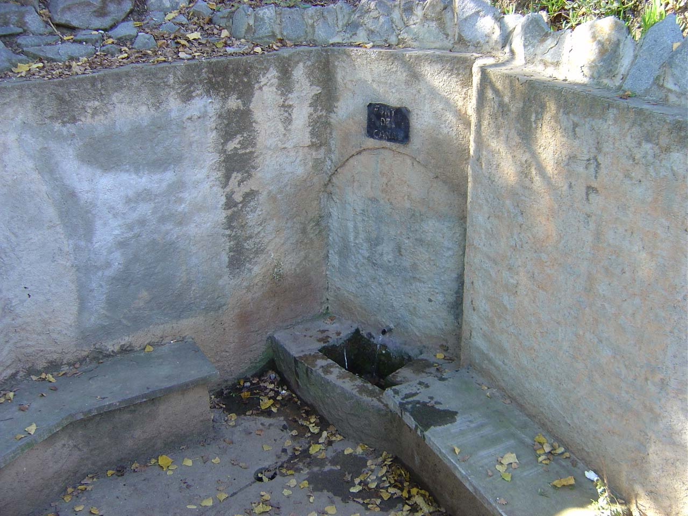
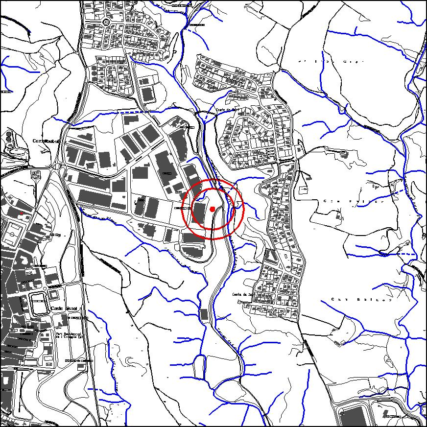

|  |  |
Nom de l’element: Font del Canal
Clau d’identificació: C.02
Nucli o indret: A sota del P.I. Compte de Sert i el barri de Compte de Sert.
UTM: X= 415.966, Y= 4.592.754.
Règim del sòl: sòl urbà.
1.1 Característiques:
És una font d’aigua amb un tub de sortida i un raig d’aigua continuat. La seva estructura és de ciment i es troba situada en una àrea de pic-nic amb barbacoes i taules. Al seu voltant la vegetació està formada bàsicament per pollancres Populusnigra i canyes Arundo donax.
1.2. Estat de conservació:
Bo
1.3. Ús actual:
Lleure.
1.4. Accés:
Accésfàcil des de la carretera que va des del P.I. Compte de Sert amb el barri de Compte de Sert.
És una de les poques fonts d’aigua supervivents del terme municipal, amb un raig continuat d’aigua i un ús de lleure important.
3.1. Usos admesos:
Espais lliures, serveis tècnics,
3.2. Condicions d’ordenació:
Segons Pla Especial a redactar.
3.3. Accés i serveis:
Accés des de la carretera que va des del P.I. Compte de Sert amb el barri de Compte de Sert.
BPU (Bé Protegit Urbanísticament)